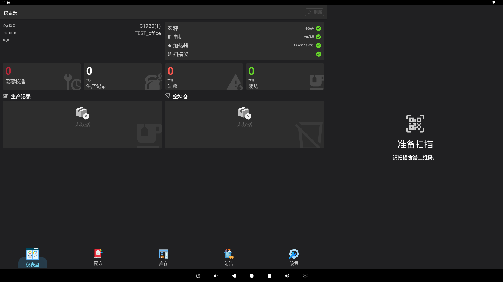
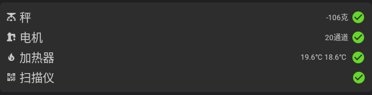
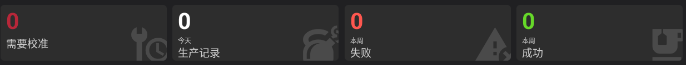
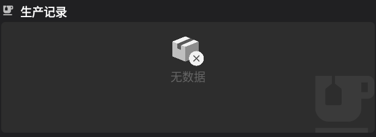

用户指南：主屏幕仪表板
主屏幕是搅拌机系统的核心仪表板。它提供有关机器状态、近期活动和基本维护要求的实时信息。

1. 机器信息
位于仪表板的左上角，此部分显示有关当前机器和门店的详细信息。
- 门店详情：显示门店名称、门店代码和门店类型。
- 机器详情：包括设备型号名称、硬件版本和唯一的 PLC 标识符 (PLC UUID)。
- 网络状态：如果机器失去 WiFi 或互联网连接，此处将出现警告，并带有一个打开系统 WiFi 设置的按钮。
- 刷新：使用页眉或此面板中的刷新按钮从服务器更新机器信息。
2. 硬件组件状态
右上角的状态面板监控机器关键硬件的运行状况和当前读数。

- 天平：显示当前净重（克）。绿色复选标记表示天平在线。点击此项可以执行重量校准或测试。
- 电机：显示活动电机通道的数量及其连接状态。
- 加热器：显示加热元件的当前温度（°C）。
- 扫描仪：指示二维码/条形码扫描仪是否已准备好处理订单。
3. 使用统计
此部分提供机器性能和维护需求的快速摘要。

- 需要校准：显示需要校准的原料容器数量。点击此卡片将带您进入校准设置。
- 今日订单：显示今天成功制作的配方总数。点击此卡片可打开详细的订单日志。
- 本周（失败）：显示当前周内失败的生产尝试次数。
- 本周（成功）：显示当前周内的成功生产总数。
4. 近期配方与活动
最近生产记录的实时提要。

- 配方列表：显示配方名称、目标体积（毫升）以及生产过程中检测到的任何重量误差。
- 订单 ID：显示每次生产的唯一订单标识符。
- 状态指示器：失败的生产会被划掉并标记为红色警报图标。
- 时间：显示每份配方开始生产的确切时间。
- 详情：点击此列表中的任何配方将打开详细的配方视图。
5. 低液位/空容器管理
监控机器中的原料液位。
- 低原料：列出所有原料液位较低（低于 1500 毫升）或已空的容器。
- 加料：点击此列表中的任何原料以打开加料界面，允许您补充容器并更新系统的库存。
提示：如果您遇到任何硬件警告（红色图标），请先检查“硬件状态”面板以识别受影响的组件。